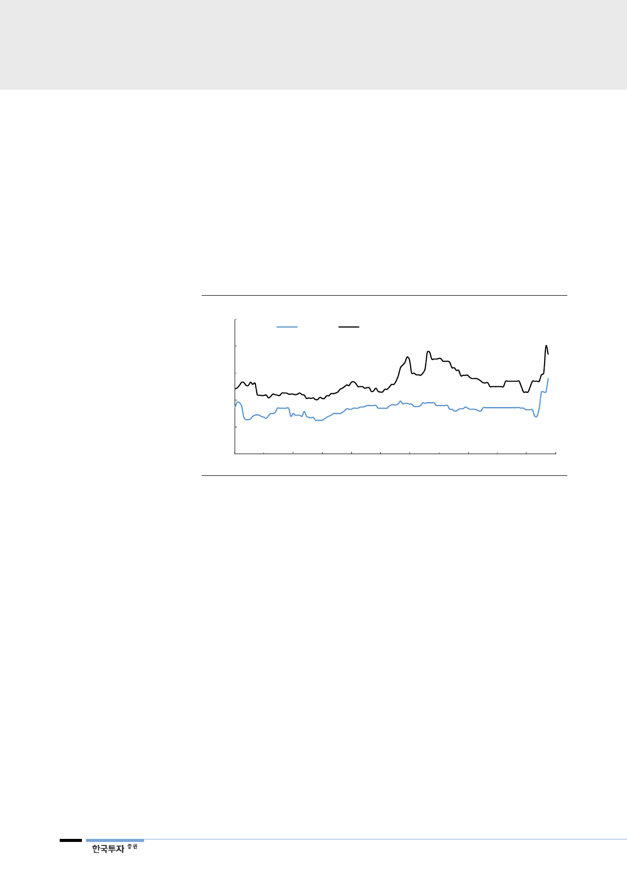

상해와 싱가폴 아연
프리미엄도 상승
2. 상해와 싱가폴 아연 프리미엄 상승
한편 상해와 싱가폴의 아연 프리미엄도 상승했다. 프리미엄은 제련사가 금속을
판매할 때 적용한 가격과 기준가격(전월평균 LME 가격)의 차이를 말한다. 금속
공급이 부족하면 프리미엄은 상승하고 공급이 지나치면 프리미엄이 하락한다. 지
역마다 금속 수급 상황이 달라 프리미엄은 지역마다 다르다. 따라서 최근 상해와
싱가폴 지역의 프리미엄 상승은 중국과 그 주변지역의 아연 공급이 부족하다고
해석할 수 있다. 프리미엄이 상승하면 제련사의 매출액이 그만큼 증가하게 된다.
원가는 같은데 매출액이 늘어나므로 제련사의 이익률이 상승하는 원인이 된다.
[그림 5] 상해와 싱가폴 아연 프리미엄
(달러/톤)
250
싱가폴
상해
200
189
150
100
50
0
Jan-16
Jul-16
자료: CEIC, 한국투자증권
Jan-17
Jul-17
Jan-18
200
140
115
70
Jul-18
중국 제련사들의 계절적
감산에 의한 일시적 현상
3. 원인과 전망
그런데 우리는 최근 벌어지고 있는 위의 두 가지 현상이 일시적이라고 판단한다.
중국 아연 spot 제련수수료와 아연 프리미엄이 상승한 것은 중국이 생산 비수기
인 3분기, 그중에서도 휴가와 개보수가 몰리는 7~8월에 감산에 나섰기 때문이라
판단한다. 제련량이 감소하니 정광 사용량과 금속 생산량이 줄게 된다. 정광 수요
와 금속 생산이 감소하면 spot 제련수수료는 오르고 금속 프리미엄은 상승한다.
중국 아연 생산량은 2018년 들어 전년대비 감소했다. Spot 제련수수료 폭락으로
수익성이 악화되어 감산에 나선 것이다. 이에 정광 수입량이 감소했고 7~8월 들
어 생산이 더 줄면서 spot 제련수수료 상승의 원인이 되었다. 4분기말 자동차 생
산 성수기를 맞아 아연 수요가 증가한다. 이에 중국 제련사들이 제련량을 늘릴 가
능성이 높다. 이 경우 spot 제련수수료와 프리미엄의 추가 상승은 쉽지 않을 것
이다.
4